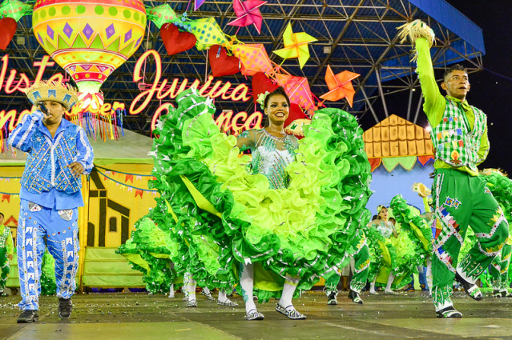
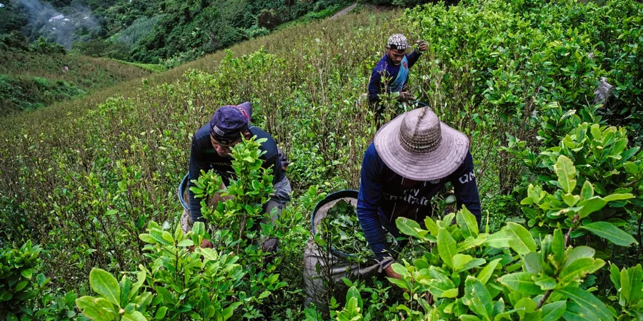
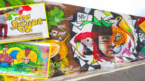
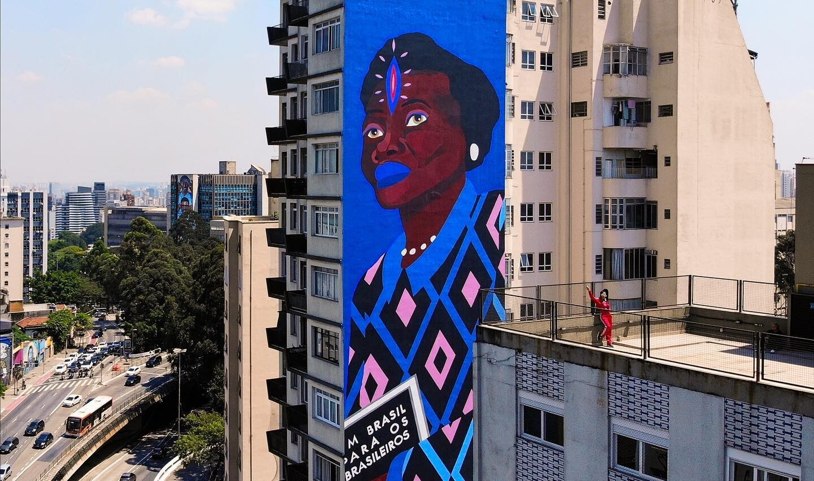

🌾 Cultura do Campo
A cultura do campo é fortemente ligada às tradições, à religião e à vida comunitária. Festas como a Festa Junina, celebrações religiosas e danças típicas como o forró fazem parte do cotidiano.
As famílias costumam ser próximas, e os valores de respeito, simplicidade e trabalho manual são valorizados. A alimentação é mais natural, e muitos costumes são passados de geração em geração.
O trabalho agrícola é parte essencial da cultura do campo.
🏙️ Cultura da Cidade
Nas cidades, a cultura é diversificada e globalizada. Teatros, cinemas, shows, museus e eventos modernos são comuns. Há influência de diferentes culturas e estilos de vida.
A rotina é mais acelerada e tecnológica. A cultura urbana valoriza a inovação, o acesso à informação e a pluralidade de opiniões e estilos. A arte de rua, os eventos culturais e os movimentos sociais são muito presentes.
A arte urbana é uma das expressões culturais mais fortes nas cidades.